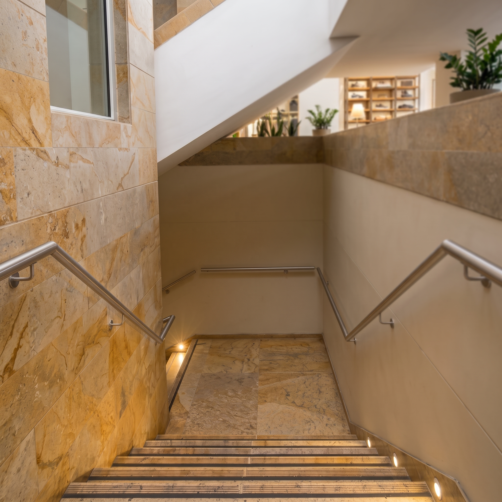
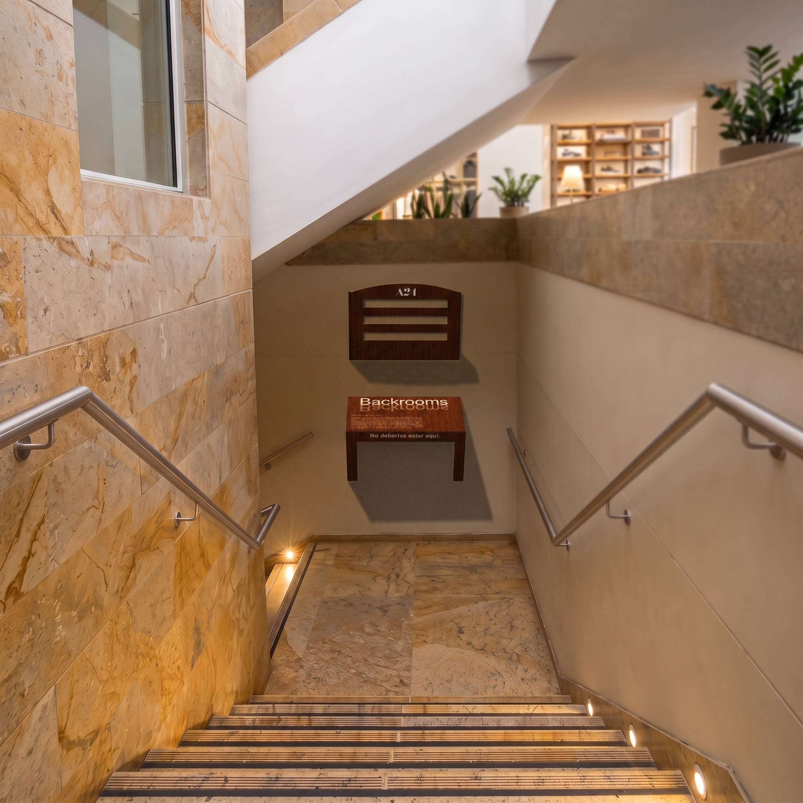
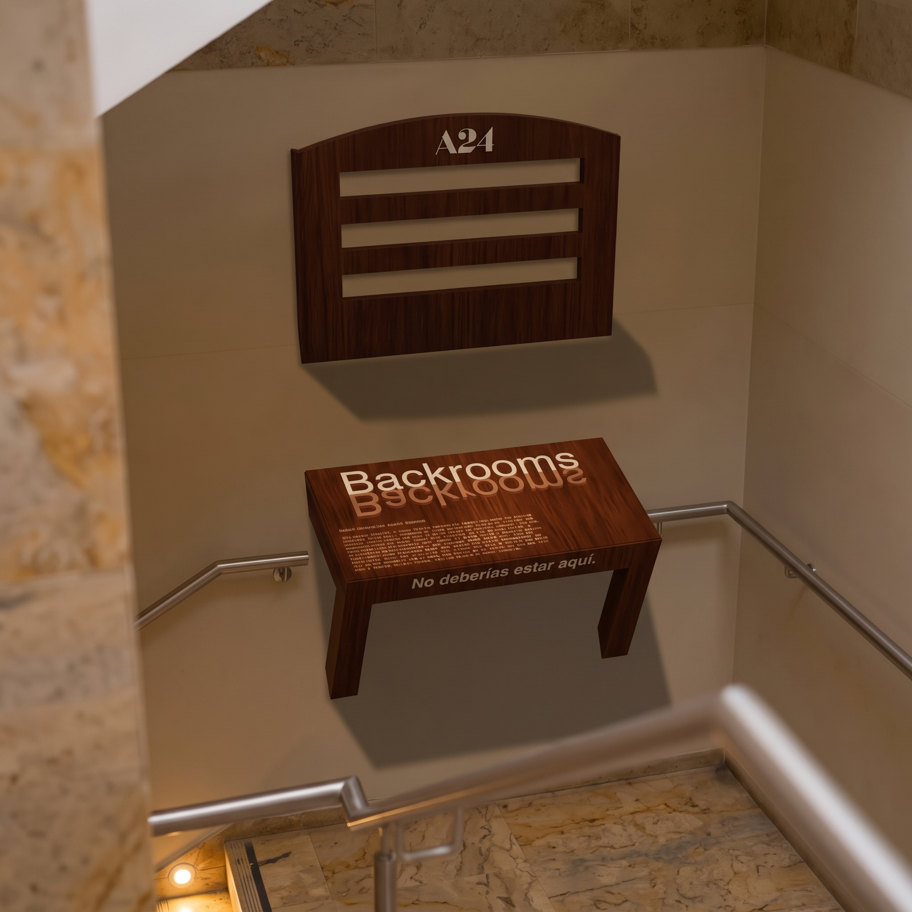

Backrooms
No deberías estar aquí.
Universidad CESMAG · Pasto · 2026
¿A quién le
habla Backrooms?
No quieren que les vendan una película: quieren tropezarse con un error de la realidad, averiguarlo y hablar al respecto.
La pieza recorre la pirámide completa: inquieta, premia y se comparte.
Noclip
El terror psicológico en espacios liminales desiertos, materializado como un error de la realidad en el lugar más rutinario del centro comercial.
En los videojuegos, noclip es el fallo que deja atravesar paredes: la colisión deja de existir y cruzas lo que debería detenerte. En los Backrooms, es así como se entra.
01La doble toma
El cerebro registra “una silla atravesando la pared”. En una pared aburrida del centro comercial, es imposible ignorarla.
02El acercamiento
Una pared color crema, una pieza de madera de un color extraño. El fan reconoce el universo; el curioso quiere entender.
03La recompensa
Los textos grabados en la silla resuelven el misterio. Los curiosos querrán fotografiar e incluso compartir el POP.
El espacio: un Backrooms potencial
Criterios: pared continua · luz fría uniforme · flujo joven y lento · lugar de tránsito.

La pieza situada


Backrooms
NO DEBERÍAS ESTAR AQUÍ.